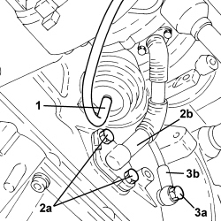
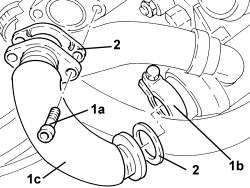
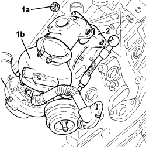
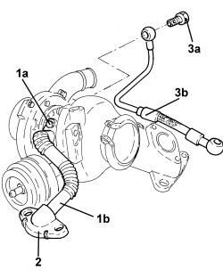
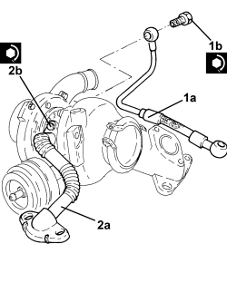
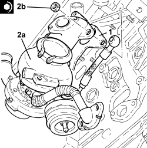
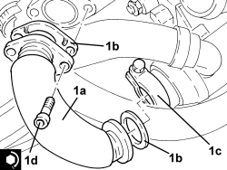
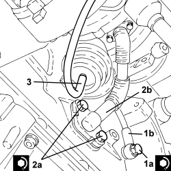

1064A27 PIPE BETWEEN VACUUM RESERVOIR AND ACTUATOR CONTROL SOLENOID VALVE - R.R.
- Path
- Procedures > 10 ENGINE > 1064 ENGINE SUPERCHARGING SYSTEM > 1064A TURBOCHARGER ASSEMBLY > 1064A27 PIPE BETWEEN VACUUM RESERVOIR AND ACTUATOR CONTROL SOLENOID VALVE - R.R.
- Kind
- repair procedure (removal / refitting; the operation number is the code)
- Applies to
- engines: 1.9 JTD 8v, 1.9 JTD 16v, 2.4 JTD 20v; all production periods
- Interactive page
- https://sloeber94.github.io/elrnDB-fCrm/en/#/194000344
Applies to: engines: 1.9 JTD 8v, 1.9 JTD 16v; all production periods
 Removing
Removing
 Refitting
Refitting- Position the vehicle on a lift.
Op. 1016A10 SOUND-PROOFING COVER - R.R
Op. 5530B52 BATTERY SUPPORT/DRIP TRAY - R.R
Op. 1048B19 TURBOCHARGER AIR OUTLET HOSE -R.R.
Op. 1048A42 SLEEVE FROM FLOW METER TO TURBO CHARGER AIR INLET PIPE - R + R
Op. 7055B54 UNDER ENGINE PROTECTION/GUARD - R.R.
Op. 1048A50 TURBOCHARGER AIR INTAKE PIPE - R.R.
Op. 1048A10 AIR FILTER ASSEMBLY - R.R.
Op. 1084A16 OIL DIPSTICK PIPE - R.R
Op. 1088D24 WATER PUMP RIGID COOLANT INLET PIPE - R.R.
Op. 1072C44 EXHAUST MANIFOLD HEAT SHIELD - R+R
Op. 1076B72 INTERMEDIATE EXHAUST PIPE WITH HOSE SECTION - R+R
Op. 1080B62 CATALYTIC CONVERTER - R + R
1. Disconnect the vacuum pipe from the variable geometry actuator.
2. Undo the bolts (2a) securing the engine oil return pipe from the turbocharger (2b), crankcase side.
3. Undo the connector (3a) fastening the engine oil supply pipe to the turbocharger (3b), crankcase side.

Applies to: engines: 1.9 JTD 8v, 1.9 JTD 16v; all production periods
1. Undo the bolts (1a), loosen the collar (1b) and remove the E.G.R. system water/exhaust gas heat exchanger inlet pipe (1c).
2. Remove the seals.

Applies to: engines: 1.9 JTD 8v, 1.9 JTD 16v; all production periods
1. Undo the nuts (1a) and remove the turbocharger and exhaust manifold assembly (1b).
2. Remove the seal.

Applies to: engines: 1.9 JTD 8v, 1.9 JTD 16v; all production periods
1. Working at the bench, undo the bolts (1a) and remove the engine oil return pipe from the turbocharger (1b).
2. Remove the seals.
3. Undo the connector (3a) and remove the turbocharger engine oil supply pipe (3b).

Applies to: engines: 1.9 JTD 8v, 1.9 JTD 16v; all production periods
Refitting
Removing1. Position the turbocharger engine oil supply pipe (1a) in its housing and secure it tightening connector (1b) to the recommended torque.
2. Position the turbocharger engine oil return pipe (2a) in its housing complete with gaskets and secure it tightening the bolts (2b) to the recommended torque.

Applies to: engines: 1.9 JTD 8v, 1.9 JTD 16v; all production periods
1. Place the gasket back in its housing.
2. Place the turbocharger and exhaust manifold assembly (2a) in its housing and tighten the nuts (2b) to the recommended torque.
Component | Fastening | dia | Value (daNm) | Validity |
|---|---|---|---|---|
Turbocharger and exhaust manifold assembly | Nut | M8 | (cylinder head side) 1.8 - 2.2 | 1.9 JTD 16v |

Applies to: engines: 1.9 JTD 8v, 1.9 JTD 16v; all production periods
1. Place the E.G.R. system exhaust gas/water heat exchanger exhaust gas inlet pipe (1a) in its housing complete with gaskets (1b), then secure it tightening the collar (1c) and the bolts (1d) to the recommended torque.
Component | Fastening | dia | Value (daNm) | Validity |
|---|---|---|---|---|
Exhaust gas/water heat exchanger for E.G.R. system | Bolt | M8 | (exhaust manifold side) 2.3 - 2.8 | 1.9 JTD 16v 2.4 JTD 20v |

Applies to: engines: 1.9 JTD 8v, 1.9 JTD 16v; all production periods
1. Tighten the connector (1a) fastening the engine oil supply pipe to the turbocharger (1b), crankcase side to the recommended torque.
Component | Fastening | dia | Value (daNm) | Validity |
|---|---|---|---|---|
Engine oil supply pipe to turbocharger | Connector | M12 | (engine crankcase side) 2.2 - 2.7 | 1.9 JTD 16v 1.9 JTD 8v |
2. Tighten the bolts (2a) securing the engine oil return pipe from the turbocharger (2b), crankcase side to the recommended torque.
Component | Fastening | dia | Value (daNm) | Validity |
|---|---|---|---|---|
Engine oil supply pipe from turbocharger | Bolt | M8 | (engine crankcase side) 2.2 - 2.7 | 1.9 JTD 16v 1.9 JTD 8v |
3. Disconnect the vacuum pipe to the variable geometry actuator.

Applies to: engines: 1.9 JTD 8v, 1.9 JTD 16v; all production periods
Op. 1080B62 CATALYTIC CONVERTER - R + R
Op. 1076B72 INTERMEDIATE EXHAUST PIPE WITH HOSE SECTION - R+R
Op. 1072C44 EXHAUST MANIFOLD HEAT SHIELD - R+R
Op. 1088D24 WATER PUMP RIGID COOLANT INLET PIPE - R.R.
Op. 1084A16 OIL DIPSTICK PIPE - R.R
Op. 1048A10 AIR FILTER ASSEMBLY - R.R.
Op. 1048A50 TURBOCHARGER AIR INTAKE PIPE - R.R.
Op. 7055B54 UNDER ENGINE PROTECTION/GUARD - R.R.
Op. 1048A42 SLEEVE FROM FLOW METER TO TURBO CHARGER AIR INLET PIPE - R + R
Op. 1048B19 TURBOCHARGER AIR OUTLET HOSE -R.R.
Op. 5530B52 BATTERY SUPPORT/DRIP TRAY - R.R
Applies to: engines: 2.4 JTD 20v; all production periods
- On this version it is not possible to remove/refit the turbocharger unit and the exhaust manifold on the car.
To perform this operation, remove/refit the power unit
Op. 1004B14 POWER UNIT WITH AUTOMATIC TRANSMISSION R + R
and then work at the bench, customising the engine service procedures for this operation.
Topics linked from this page (15)
- 0010T20 ENGINE COOLANT - CHANGE
- 1004B14 POWER UNIT WITH AUTOMATIC TRANSMISSION R + R
- 1016A10 SOUND-PROOFING COVER - R.R
- 1048A10 AIR FILTER ASSEMBLY - R.R.
- 1048A42 SLEEVE FROM FLOW METER TO TURBO CHARGER AIR INLET PIPE - R + R
- 1048A50 TURBOCHARGER AIR INTAKE PIPE - R.R.
- 1048B19 TURBOCHARGER AIR OUTLET HOSE -R.R.
- 1072C44 EXHAUST MANIFOLD HEAT SHIELD - R+R
- 1076B72 INTERMEDIATE EXHAUST PIPE WITH HOSE SECTION - R+R
- 1080B62 CATALYTIC CONVERTER - R + R
- 1084A16 OIL DIPSTICK PIPE - R.R
- 1088D24 WATER PUMP RIGID COOLANT INLET PIPE - R.R.
- 5530B10 BATTERY - R+R
- 5530B52 BATTERY SUPPORT/DRIP TRAY - R.R
- 7055B54 UNDER ENGINE PROTECTION/GUARD - R.R.